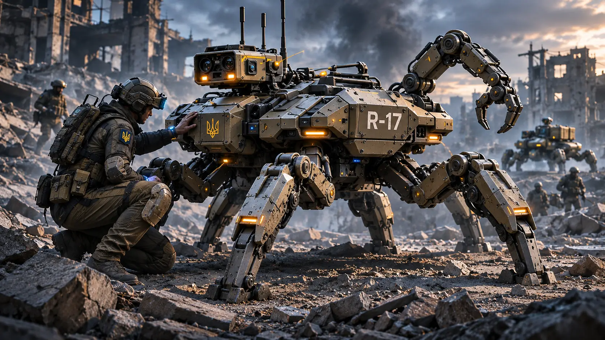
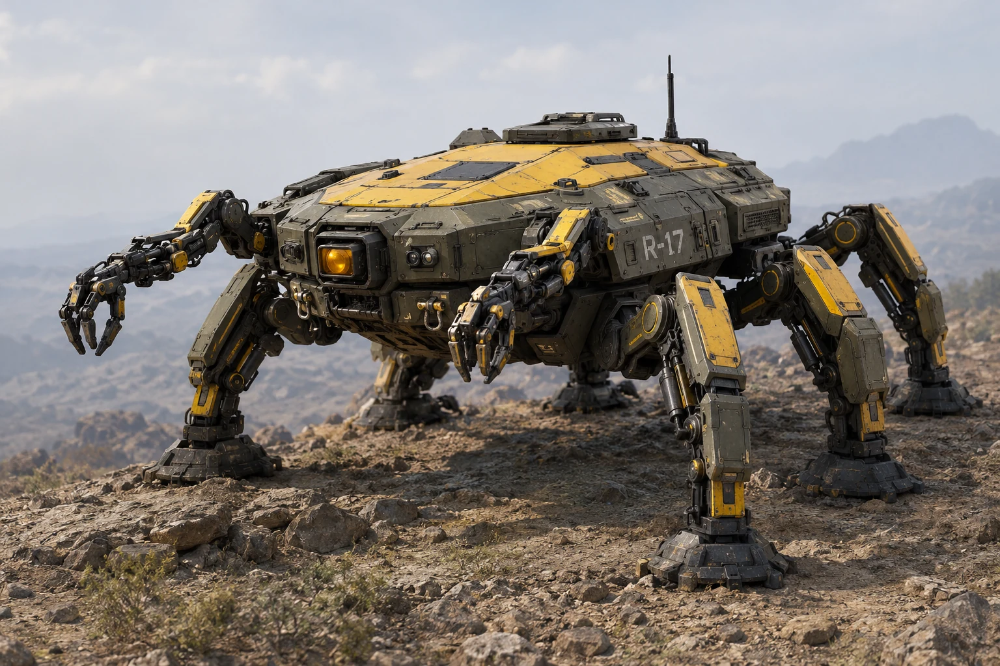
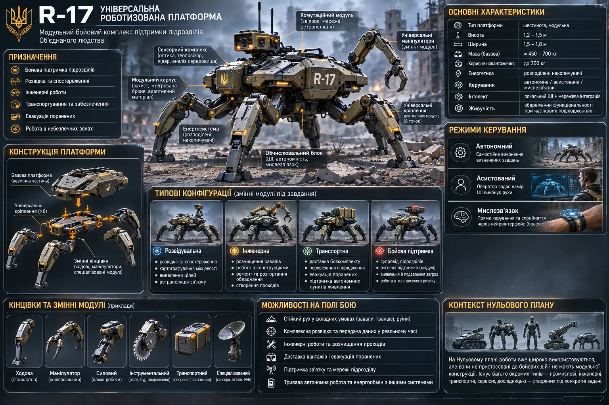
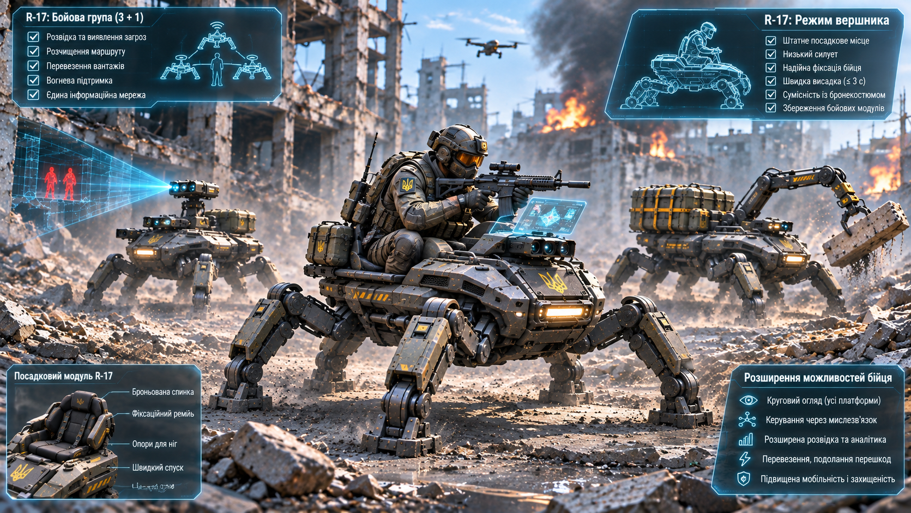
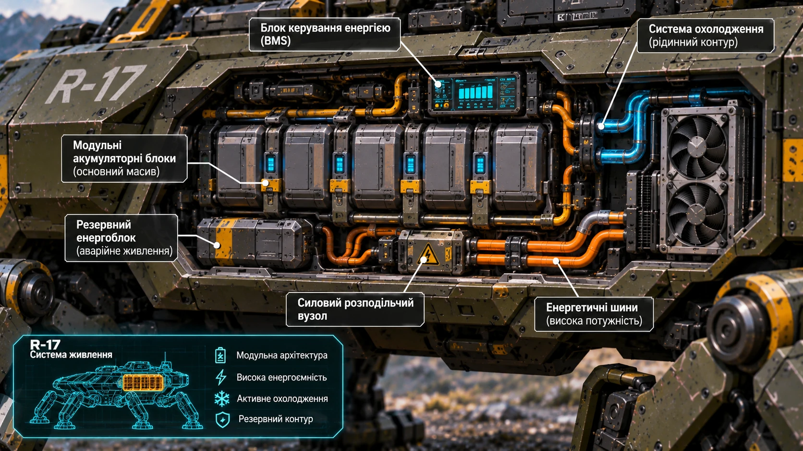
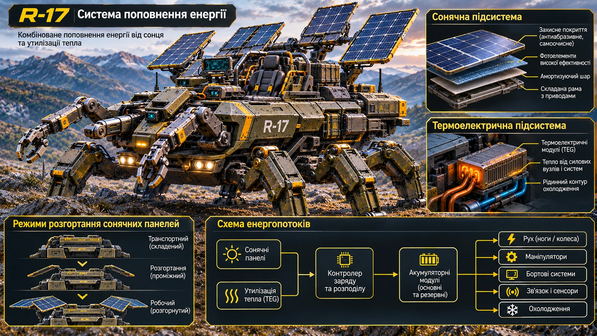

Важкий голкомет
Модуль для важких пенетраторів. Попередній боєзапас — 400 пострілів.

Універсальна роботизована платформа підтримки. Шестинога роботизована платформа крабоподібної конструкції: шість кінцівок розташовані по периметру основного корпуса, а два маніпулятори встановлені спереду корпуса, ліворуч і праворуч. Чотири кінцівки мають висувні колісні модулі.
Єдиний канонічний паттерн для всіх ілюстрацій R-17. Для конкретного кадру змінюй лише тип зображення, ракурс, режим, оточення та потрібний рівень деталізації. Усі незазначені параметри залишаються незмінними.
СТВОРИ РЕАЛІСТИЧНУ ІЛЮСТРАЦІЮ ВИГАДАНОЇ РОБОТИЗОВАНОЇ ПЛАТФОРМИ R-17 ДЛЯ ВСЕСВІТУ «ХАРАКТЕРНИКИ». КАНОН, ЯКИЙ НЕ МОЖНА ЗМІНЮВАТИ: R-17 має один широкий, низький, видовжений центральний броньований корпус. Навколо нього РІВНО ШІСТЬ ходових кінцівок: три зліва і три справа, передня, середня та задня пари. РІВНО ДВА окремі багатосекційні маніпулятори з функціональними захватами встановлені СПЕРЕДУ корпуса — один ліворуч, один праворуч. Маніпулятори не є ногами й не входять до числа шести ходових кінцівок. На верхній частині корпуса є ОДНЕ посадкове місце для одного бійця. Платформа не гуманоїдна, не має людської голови чи тулуба. Колісний режим: рівно чотири колеса на чотирьох кутових ходових кінцівках; дві середні кінцівки — опорні, без коліс. Режим ходи: усі шість кінцівок завершуються широкими механічними ступнями, коліс не видно. Не змішувати режими, якщо прямо не показано перехід. Зовнішність: матова темно-оливкова та графітово-сіра броня, стримані жовті технічні маркування. Реалістичні металеві панелі, шви, люки, кріплення, ущільнення, шарніри, електромеханічні або гідравлічні приводи, кабельні канали, амортизатори та захисні кожухи. Пропорції важкої промислової машини, без іграшкового блиску чи декоративного перевантаження. СТИЛЬ: Фотореалістична кінематографічна наукова фантастика, правдоподібна інженерія, реалістичні матеріали й фізично переконливе освітлення. Стримана палітра: оливковий, графітовий, темно-сірий, металевий, невеликі жовті акценти. Достатньо світла, щоб конструкцію було добре видно. Не використовувати мультяшний, аніме-, коміксний або пластиковий стиль. МОЖЛИВІ ТИПИ КАДРУ — ОБРАТИ ПОТРІБНИЙ: 1) Загальний/геройний вигляд — уся платформа, три чверті спереду, трохи згори. 2) Колісний режим — чотири кутові колеса, дві середні опорні кінцівки. 3) Режим ходи — шість механічних ступень, колеса прибрані; крок, сходи, завали або нерівний рельєф. 4) Посадкове місце — одне сидіння, рама, ремені, органи керування, дисплеї. 5) Маніпулятори — передня частина корпуса, обидва маніпулятори, їхні сегменти, приводи та захвати. 6) Ходова механіка — крупний план кінцівок, шарнірів, приводів, амортизаторів, ступень або колісних вузлів. 7) Бронекорпус — панелі, люки, стики, сенсори, сервісні зони й маркування. 8) Акумуляторний відсік — інженерний розріз корпуса з сегментованими батарейними блоками всередині захищених секцій, перегородками, амортизованими кріпленнями, охолодженням, BMS і силовою шиною. 9) Енергетична система — інтегровані сонячні елементи, складні панелі у розгорнутому/складеному стані та термоелектричне повернення частини тепла з контуру охолодження. 10) Технічний розріз або exploded view — внутрішнє компонування без зміни зовнішньої геометрії. 11) Габарити й проєкції — ортогональні вигляди спереду, збоку та згори, пропорційні контури й розмірні лінії. 12) У середовищі — дорога, руїни, приміщення, пересічена місцевість або технічний майданчик. 13) Сюжетна/експлуатаційна сцена — рух, зупинка, перевезення бійця, огляд об'єкта або робота маніпуляторами. КОМПОЗИЦІЯ: Якщо потрібна вся машина — показати її повністю, не обрізаючи шість кінцівок і два маніпулятори; залишити простір навколо силуету. Базовий ракурс — три чверті спереду, трохи згори. Для технічних схем — ортогональні проєкції без перспективних спотворень. Для деталей — крупний план, який однозначно показує відповідний вузол. Формат за замовчуванням горизонтальний 16:9. НЕГАТИВНІ ОБМЕЖЕННЯ: Не додавати й не прибирати ходові кінцівки: завжди рівно шість. Не додавати й не прибирати маніпулятори: завжди рівно два, тільки спереду корпуса. Не переносити маніпулятори на боки чи назад і не робити їх ногами. У колісному режимі — рівно чотири колеса лише на кутових кінцівках; у режимі ходи коліс не видно. Не додавати другого сидіння чи пасажира. Не змінювати широкий низький корпус на вузький, високий або гуманоїдний. Не створювати дубльованих, зрощених, дзеркальних чи механічно неможливих вузлів. Не додавати випадкових написів, логотипів, чисел або псевдотексту. ПАРАМЕТРИ ЦЬОГО КАДРУ: Тип кадру: [загальний вигляд / колісний режим / режим ходи / посадкове місце / маніпулятори / ходова механіка / бронекорпус / акумулятори / енергетика / розріз / габарити / середовище / сюжетна сцена]. Ракурс: [три чверті спереду / збоку / ззаду / згори / спереду / ортогональні проєкції / крупний план]. Дія або стан: [описати]. Середовище: [описати або нейтральний технічний фон]. Освітлення: [денне / похмуре / промислове / сутінки / ніч із достатньою видимістю]. Формат: [16:9 або інший]. Додаткові деталі: [лише необхідні для цього кадру]. ПЕРЕВІРКА ПЕРЕД ФІНАЛОМ: шість ходових кінцівок; два передні маніпулятори; одне місце бійця; правильний режим коліс або ступень; незмінний широкий низький корпус; усі потрібні частини в кадрі. Якщо є помилка — виправити зображення, а не змінювати канон.
R-17 — універсальна роботизована платформа підтримки підрозділу. Вона перевозить одного бійця, спорядження та вантажі, забезпечує спостереження, інженерну допомогу й бойову підтримку. R-17 не замінює бійця та не є самостійним піхотинцем: це додатковий мобільний ресурс підрозділу.
Її головна особливість — поєднання шестиногої ходи з колісним режимом. На дорогах і твердих поверхнях платформа використовує колеса, а на завалах, сходах і складному рельєфі переходить на шість кінцівок.
Центральна броньована платформа є основою крабоподібної конструкції. Шість ходових кінцівок кріпляться навколо неї по периметру — попереду, з боків і позаду, утворюючи три пари опор. Два окремі маніпулятори встановлені у передній частині корпуса, ліворуч і праворуч. Вони не є ходовими кінцівками й не займають їхніх вузлів кріплення. Усередині центрального корпуса розміщені акумуляторні блоки, обчислювальна система, зв'язок, сенсори та вузли керування.
Чотири кутові кінцівки мають висувні колісні модулі. Дві середні кінцівки залишаються опорними та допомагають долати перешкоди й стабілізувати корпус. У колісному режимі кутові кінцівки формують прямокутну базу, а середня пара піднімається. У режимі ходи колеса ховаються, і працюють усі шість кінцівок.


Два голкомети встановлюються на окремих силових точках центрального корпуса. Важкий модуль призначений для важких пенетраторів, легкий — для легших боєприпасів і більшого боєзапасу. Розміщення на корпусі не займає шість вузлів кріплення кінцівок.
Два маніпулятори встановлені спереду центрального корпуса — по одному ліворуч і праворуч. Вони призначені для допоміжних робіт: огляду, переміщення окремих уламків і роботи з обладнанням. Обидва мають власні точки кріплення та не замінюють жодної з шести ходових кінцівок. Посадкове місце для одного бійця є штатним елементом платформи.
Модуль для важких пенетраторів. Попередній боєзапас — 400 пострілів.
Модуль для легких пенетраторів. Попередній боєзапас — 2 000 пострілів.

Автономний режим: платформа виконує задані завдання, прокладає маршрут, спостерігає та повертається до точки обслуговування.
Режим із супроводом оператора: оператор задає напрямок або намір, а бортова система самостійно стабілізує рух, обходить перешкоди й контролює навантаження. Керування через мислезв'язок дає бійцю змогу отримувати сенсорну інформацію R-17 та спрямовувати її рух і маніпулятор. Мережева взаємодія — не окремий режим керування, а канал обміну даними з бійцями, іншими платформами й командними системами.
Номінальна ємність акумуляторного комплексу — близько 80 кВт·год. За проєктної питомої енергоємності 500 Вт·год/кг батарейний комплекс важить орієнтовно 160 кг. Це цільовий показник технологій Нульового плану, а не характеристика сучасних акумуляторів.
Для розрахунків передбачено 15% недоторканного резерву. Отже, на звичайну роботу доступно близько 68 кВт·год. Сегментовані блоки можна ізолювати або замінювати окремо. Запас ходу, тривалість чергування та інтенсивна бойова робота використовують спільний енергетичний бюджет і не досягають максимуму одночасно.


Акумуляторні модулі розміщені всередині центрального броньованого корпуса, у кількох окремих захищених секціях. Вони не формують зовнішню поверхню платформи й не залишаються відкритими для прямого ураження. Секції мають внутрішні силові перегородки, амортизовані кріплення та теплоізоляцію, що зменшує ризик пошкодження батарей від удару, уламків і деформації корпуса.
Кожен сегмент має незалежний контроль температури, напруги та стану. У разі пробиття, перегріву або короткого замикання автоматика від’єднує пошкоджений блок від загальної шини. Протипожежна система локалізує аварію всередині секції та не допускає її швидкого поширення на сусідні модулі. Пошкодження одного сегмента зменшує доступну ємність, але не обов’язково виводить з ладу весь акумуляторний комплекс.
R-17 має дві допоміжні системи самостійного заряджання. Перша — термоелектричні генератори в контурі відведення тепла. Вони перетворюють частину різниці температур між нагрітими вузлами та охолоджувальним контуром на електроенергію й повертають її до батареї. Система використовує частину тепла, яке інакше довелося б відводити, але її потужності недостатньо, щоб компенсувати споживання під час активного руху чи бою.
Друга система — сонячні фотоелектричні панелі. Захищені плоскі елементи інтегровані у верхні поверхні корпуса й можуть виробляти енергію під час руху та стоянки. Для тривалого перебування на місці передбачені додаткові складні панелі, які розгортаються для збільшення площі збору світла. Перед рухом або боєм вони складаються в броньовані ніші. Панелі поділені на секції: пошкодження однієї частини не повинно відключати всю систему.
Обидва джерела можуть працювати одночасно й подавати енергію через контролер заряджання до акумуляторного комплексу. Фактичне поповнення залежить від освітлення, температурного режиму та поточного навантаження платформи. Це засіб підтримання запасу енергії та подовження автономності, а не заміна зовнішньої зарядної станції.
Найбільше навантаження на систему охолодження виникає під час активної ходи: втрати приводів, редукторів та електроніки нагрівають внутрішні компоненти. Колісний режим зменшує витрати на пересування й відповідно знижує теплове навантаження, але не робить платформу холодною або невидимою.
На стоянці механічні фіксатори утримують кінцівки без постійного живлення приводів. Активними залишаються сенсори, обчислення та зв'язок. Тепло відводиться рідинним контуром і теплообмінниками. Точні значення тепловиділення та інфрачервоної помітності залежать від режиму й поки не фіксуються як універсальні цифри.
Маршовий режим — рух на колесах дорогами й твердими поверхнями. Режим складного рельєфу — шестинога хода на завалах, сходах і пересіченій місцевості.
Бойовий режим поєднує спостереження, взаємодію з підрозділом і роботу озброєння під контролем людини. У режимі чергування суглоби фіксуються механічно, щоб зменшити споживання приводів. У транспортному режимі платформа перевозить одного бійця та додаткове спорядження в межах допустимого навантаження.
Наведені значення є узгодженою проєктною конфігурацією R-17. Запас ходу залежить від поверхні, маси, швидкості, стану батареї та роботи допоміжних систем.
| Параметр | Значення |
|---|---|
| Базова маса (батарея та штатні системи включені) | до 700 кг |
| Корисне навантаження (включно з бійцем) | до 300 кг |
| Максимальна маса завантаженої платформи | до 1000 кг |
| Акумуляторний комплекс | 80 кВт·год, сегментований і броньовано захищений |
| Допоміжне заряджання | утилізація тепла та сонячні панелі |
| Доступна енергія з резервом 15% | 68 кВт·год |
| Питома енергоємність батарей | 500 Вт·год/кг (проєктна) |
| Швидкість ходи | близько 5 км/год |
| Швидкість на колесах | до 36 км/год (розрахункова) |
| Чергування | до 60 годин в економному режимі |
| Ходові кінцівки / колісні модулі | 6 / 4 |
| Передні маніпулятори | 2 |
| Штатне озброєння | 2 голкомети |
| Посадкове місце | 1 боєць |
| Умови | Витрати | Запас ходу |
|---|---|---|
| Хода рівною поверхнею | 2,7 кВт·год/км | близько 25 км |
| Хода завалами | 5,5 кВт·год/км | близько 12 км |
| Колеса, асфальт | 0,12 кВт·год/км | близько 560 км |
| Колеса, ґрунтова дорога | 0,23 кВт·год/км | близько 295 км |
| Колеса, м'який ґрунт | 0,55 кВт·год/км | близько 125 км |
R-17 не може одночасно забезпечувати максимальну дальність, тривале чергування та інтенсивну бойову роботу. Пересування завалами значно енерговитратніше за рух колесами. На м'якому ґрунті, крутих схилах і нестабільних поверхнях колісний режим обмежений.
Пошкодження кінцівок, сенсорів, корпуса або систем зв'язку знижує можливості платформи. У разі нестачі енергії R-17 переходить у режим обмеженої функціональності або завершує завдання. Рішення про застосування летальної сили залишається за оператором.